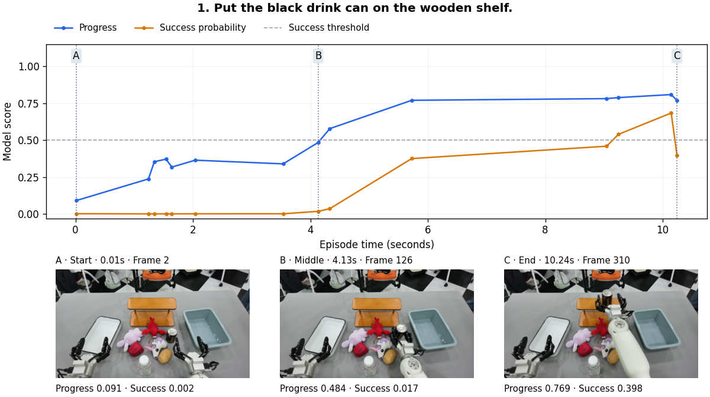
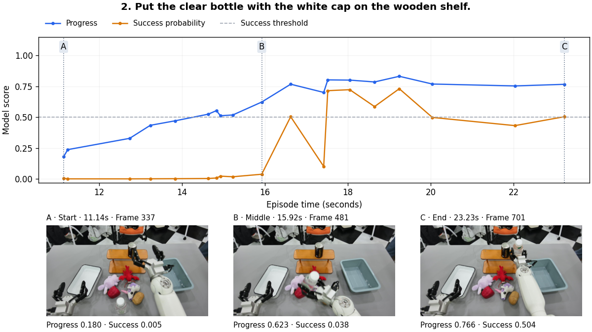
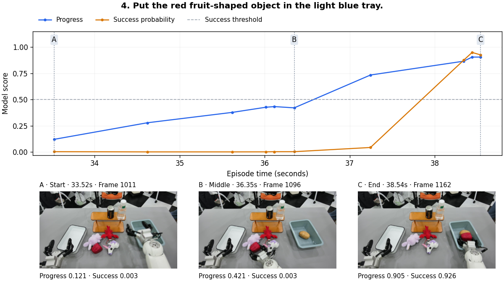
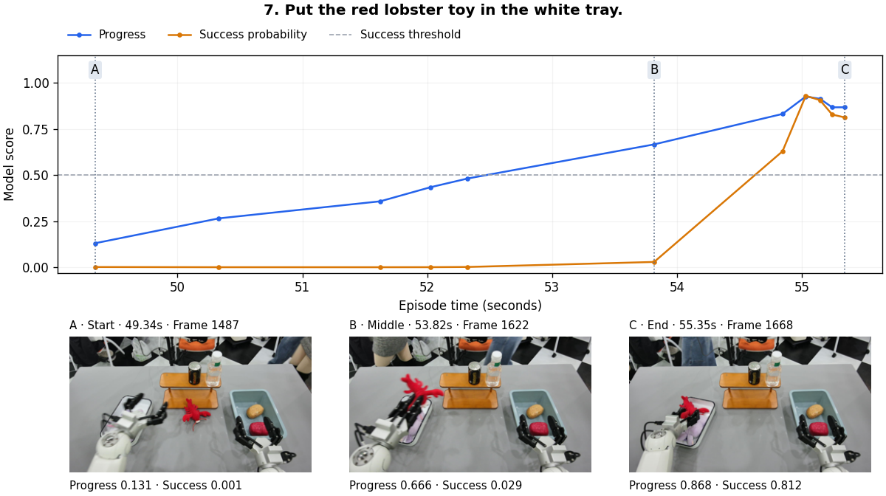
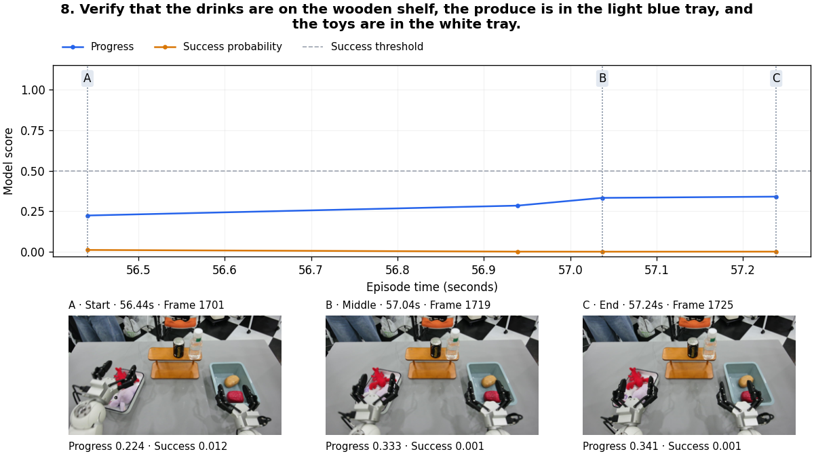
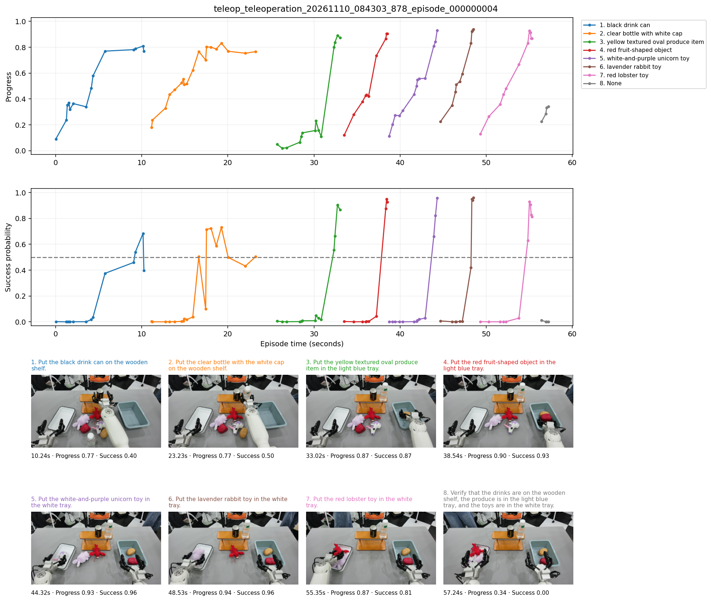

3. Put the yellow textured oval produce item in the light blue tray.

Evaluated 95 selected head-camera frames across 8 instruction segments, spanning 0.01–57.24 seconds of episode time. 17 frames carry source annotation review flags. The model assigned success probability above 0.5 to 26 frames.
The 0.5 threshold is the example script’s decision threshold. Frame counts above this threshold describe model outputs. Ground-truth success rates and accuracy require human labels.
Each panel shows one instruction segment. Lettered markers on the plot match the selected head-camera images below it; the lines include every scored frame in that segment.







Start and end scores refer to the first and last selected frame carrying that instruction. These boundaries come from next-subtask annotations. They may omit the previous action’s final release or verification frame. Each score uses up to eight frames available by that point within its instruction segment.
| Instruction | Time range / frames | Progress start → end | Success at end / peak | Frames above 0.5 | Review flags |
|---|---|---|---|---|---|
| Put the black drink can on the wooden shelf. | 0.01–10.24s 14 frames | 0.091 → 0.769 | 0.398 / 0.684 | 2/14 | 1 |
| Put the clear bottle with the white cap on the wooden shelf. | 11.14–23.23s 19 frames | 0.180 → 0.766 | 0.504 / 0.730 | 6/19 | 2 |
| Put the yellow textured oval produce item in the light blue tray. | 25.72–33.02s 14 frames | 0.049 → 0.875 | 0.867 / 0.902 | 4/14 | 2 |
| Put the red fruit-shaped object in the light blue tray. | 33.52–38.54s 10 frames | 0.121 → 0.905 | 0.926 / 0.949 | 3/10 | 2 |
| Put the white-and-purple unicorn toy in the white tray. | 38.74–44.32s 13 frames | 0.113 → 0.931 | 0.957 / 0.957 | 3/13 | 2 |
| Put the lavender rabbit toy in the white tray. | 44.72–48.53s 10 frames | 0.226 → 0.940 | 0.961 / 0.961 | 3/10 | 2 |
| Put the red lobster toy in the white tray. | 49.34–55.35s 11 frames | 0.131 → 0.868 | 0.812 / 0.930 | 5/11 | 2 |
| Verify that the drinks are on the wooden shelf, the produce is in the light blue tray, and the toys are in the white tray. | 56.44–57.24s 4 frames | 0.224 → 0.341 | 0.001 / 0.012 | 0/4 | 4 |
These notes were supplied with the selected frames. They have not been independently relabeled for this evaluation.
Raw head stream /home/jiahe/system012/data/teleop_teleoperation_20261110_084303_878/episode_000000004/observation.images.cam_head.parquet. Every selected JPEG was verified against the raw frame’s timestamp and SHA-256. The inference input uses RGB images with the short side resized to 240 pixels before Qwen processing.
The gallery lists the original selected frames and their exact instructions. Changing the selected history can change a prediction. Instruction transitions reset the context, so progress values across different segments describe different tasks.
Frame and context manifest · All frame scores · All subtask summaries

| Frame / time | Head camera | Instruction and review notes | Progress / success |
|---|---|---|---|
| 2 0.01s |  | Put the black drink can on the wooden shelf. | 0.091 / 0.002 |
| 39 1.24s |  | Put the black drink can on the wooden shelf. | 0.237 / 0.000 |
| 42 1.34s |  | Put the black drink can on the wooden shelf. | 0.354 / 0.000 |
| 48 1.54s |  | Put the black drink can on the wooden shelf. | 0.371 / 0.001 |
| 51 1.64s |  | Put the black drink can on the wooden shelf. | 0.317 / 0.001 |
| 63 2.04s |  | Put the black drink can on the wooden shelf. | 0.364 / 0.001 |
| 108 3.54s |  | Put the black drink can on the wooden shelf. | 0.339 / 0.001 |
| 126 4.13s |  | Put the black drink can on the wooden shelf. | 0.484 / 0.017 |
| 132 4.33s |  | Put the black drink can on the wooden shelf. | 0.578 / 0.036 |
| 174 5.73s |  | Put the black drink can on the wooden shelf. | 0.770 / 0.375 |
| 274 9.05s |  | Put the black drink can on the wooden shelf. | 0.781 / 0.459 |
| 280 9.25s |  | Put the black drink can on the wooden shelf. | 0.788 / 0.539 |
| 307 10.14s |  | Put the black drink can on the wooden shelf. | 0.809 / 0.684 |
| 310 10.24s |  | Put the black drink can on the wooden shelf. Task boundary: confirm release and next target in the original head/wrist images. | 0.769 / 0.398 |
| 337 11.14s |  | Put the clear bottle with the white cap on the wooden shelf. Task boundary: confirm release and next target in the original head/wrist images. | 0.180 / 0.005 |
| 340 11.24s |  | Put the clear bottle with the white cap on the wooden shelf. | 0.237 / 0.000 |
| 385 12.73s |  | Put the clear bottle with the white cap on the wooden shelf. | 0.329 / 0.000 |
| 400 13.23s |  | Put the clear bottle with the white cap on the wooden shelf. | 0.434 / 0.001 |
| 418 13.83s |  | Put the clear bottle with the white cap on the wooden shelf. | 0.471 / 0.002 |
| 442 14.63s |  | Put the clear bottle with the white cap on the wooden shelf. | 0.524 / 0.003 |
| 448 14.83s |  | Put the clear bottle with the white cap on the wooden shelf. | 0.553 / 0.007 |
| 451 14.93s |  | Put the clear bottle with the white cap on the wooden shelf. | 0.512 / 0.022 |
| 460 15.22s |  | Put the clear bottle with the white cap on the wooden shelf. | 0.518 / 0.017 |
| 481 15.92s |  | Put the clear bottle with the white cap on the wooden shelf. | 0.623 / 0.038 |
| 502 16.62s |  | Put the clear bottle with the white cap on the wooden shelf. | 0.767 / 0.504 |
| 526 17.42s |  | Put the clear bottle with the white cap on the wooden shelf. | 0.701 / 0.101 |
| 529 17.52s |  | Put the clear bottle with the white cap on the wooden shelf. | 0.802 / 0.715 |
| 545 18.05s |  | Put the clear bottle with the white cap on the wooden shelf. | 0.800 / 0.723 |
| 563 18.64s |  | Put the clear bottle with the white cap on the wooden shelf. | 0.785 / 0.586 |
| 581 19.24s |  | Put the clear bottle with the white cap on the wooden shelf. | 0.831 / 0.730 |
| 605 20.04s |  | Put the clear bottle with the white cap on the wooden shelf. | 0.769 / 0.498 |
| 665 22.03s |  | Put the clear bottle with the white cap on the wooden shelf. | 0.753 / 0.432 |
| 701 23.23s |  | Put the clear bottle with the white cap on the wooden shelf. Task boundary: confirm release and next target in the original head/wrist images. | 0.766 / 0.504 |
| 776 25.72s |  | Put the yellow textured oval produce item in the light blue tray. Task boundary: confirm release and next target in the original head/wrist images. | 0.049 / 0.006 |
| 794 26.32s |  | Put the yellow textured oval produce item in the light blue tray. | 0.019 / 0.001 |
| 809 26.82s |  | Put the yellow textured oval produce item in the light blue tray. | 0.023 / 0.001 |
| 855 28.34s |  | Put the yellow textured oval produce item in the light blue tray. | 0.065 / 0.002 |
| 861 28.54s |  | Put the yellow textured oval produce item in the light blue tray. | 0.108 / 0.004 |
| 864 28.64s |  | Put the yellow textured oval produce item in the light blue tray. | 0.138 / 0.008 |
| 909 30.14s |  | Put the yellow textured oval produce item in the light blue tray. | 0.156 / 0.009 |
| 912 30.24s |  | Put the yellow textured oval produce item in the light blue tray. | 0.231 / 0.048 |
| 921 30.54s |  | Put the yellow textured oval produce item in the light blue tray. | 0.157 / 0.028 |
| 930 30.84s |  | Put the yellow textured oval produce item in the light blue tray. | 0.110 / 0.017 |
| 975 32.33s |  | Put the yellow textured oval produce item in the light blue tray. | 0.800 / 0.555 |
| 978 32.44s |  | Put the yellow textured oval produce item in the light blue tray. | 0.838 / 0.664 |
| 987 32.73s |  | Put the yellow textured oval produce item in the light blue tray. | 0.890 / 0.902 |
| 996 33.02s |  | Put the yellow textured oval produce item in the light blue tray. Task boundary: confirm release and next target in the original head/wrist images. | 0.875 / 0.867 |
| 1011 33.52s |  | Put the red fruit-shaped object in the light blue tray. Task boundary: confirm release and next target in the original head/wrist images. | 0.121 / 0.003 |
| 1044 34.62s |  | Put the red fruit-shaped object in the light blue tray. | 0.278 / 0.001 |
| 1074 35.62s |  | Put the red fruit-shaped object in the light blue tray. | 0.378 / 0.001 |
| 1086 36.01s |  | Put the red fruit-shaped object in the light blue tray. | 0.427 / 0.001 |
| 1089 36.11s |  | Put the red fruit-shaped object in the light blue tray. | 0.433 / 0.002 |
| 1096 36.35s |  | Put the red fruit-shaped object in the light blue tray. | 0.421 / 0.003 |
| 1123 37.24s |  | Put the red fruit-shaped object in the light blue tray. | 0.734 / 0.043 |
| 1156 38.34s |  | Put the red fruit-shaped object in the light blue tray. | 0.866 / 0.875 |
| 1159 38.44s |  | Put the red fruit-shaped object in the light blue tray. | 0.905 / 0.949 |
| 1162 38.54s |  | Put the red fruit-shaped object in the light blue tray. Task boundary: confirm release and next target in the original head/wrist images. | 0.905 / 0.926 |
| 1168 38.74s |  | Put the white-and-purple unicorn toy in the white tray. Task boundary: confirm release and next target in the original head/wrist images. | 0.113 / 0.001 |
| 1180 39.14s |  | Put the white-and-purple unicorn toy in the white tray. | 0.203 / 0.001 |
| 1189 39.44s |  | Put the white-and-purple unicorn toy in the white tray. | 0.274 / 0.000 |
| 1204 39.94s |  | Put the white-and-purple unicorn toy in the white tray. | 0.271 / 0.000 |
| 1216 40.33s |  | Put the white-and-purple unicorn toy in the white tray. | 0.311 / 0.001 |
| 1255 41.63s |  | Put the white-and-purple unicorn toy in the white tray. | 0.435 / 0.001 |
| 1264 41.93s |  | Put the white-and-purple unicorn toy in the white tray. | 0.499 / 0.003 |
| 1267 42.03s |  | Put the white-and-purple unicorn toy in the white tray. | 0.549 / 0.013 |
| 1273 42.22s |  | Put the white-and-purple unicorn toy in the white tray. | 0.556 / 0.019 |
| 1294 42.92s |  | Put the white-and-purple unicorn toy in the white tray. | 0.560 / 0.029 |
| 1324 43.92s |  | Put the white-and-purple unicorn toy in the white tray. | 0.809 / 0.660 |
| 1330 44.12s |  | Put the white-and-purple unicorn toy in the white tray. | 0.844 / 0.820 |
| 1336 44.32s |  | Put the white-and-purple unicorn toy in the white tray. Task boundary: confirm release and next target in the original head/wrist images. | 0.931 / 0.957 |
| 1348 44.72s |  | Put the lavender rabbit toy in the white tray. Task boundary: confirm release and next target in the original head/wrist images. | 0.226 / 0.007 |
| 1388 46.04s |  | Put the lavender rabbit toy in the white tray. | 0.351 / 0.001 |
| 1400 46.44s |  | Put the lavender rabbit toy in the white tray. | 0.455 / 0.001 |
| 1403 46.54s |  | Put the lavender rabbit toy in the white tray. | 0.511 / 0.001 |
| 1415 46.94s |  | Put the lavender rabbit toy in the white tray. | 0.535 / 0.002 |
| 1424 47.24s |  | Put the lavender rabbit toy in the white tray. | 0.592 / 0.005 |
| 1454 48.25s |  | Put the lavender rabbit toy in the white tray. | 0.831 / 0.420 |
| 1457 48.35s |  | Put the lavender rabbit toy in the white tray. | 0.921 / 0.949 |
| 1460 48.44s |  | Put the lavender rabbit toy in the white tray. | 0.929 / 0.941 |
| 1463 48.53s |  | Put the lavender rabbit toy in the white tray. Task boundary: confirm release and next target in the original head/wrist images. | 0.940 / 0.961 |
| 1487 49.34s |  | Put the red lobster toy in the white tray. Task boundary: confirm release and next target in the original head/wrist images. | 0.131 / 0.001 |
| 1517 50.33s |  | Put the red lobster toy in the white tray. | 0.265 / 0.000 |
| 1556 51.62s |  | Put the red lobster toy in the white tray. | 0.358 / 0.000 |
| 1568 52.02s |  | Put the red lobster toy in the white tray. | 0.434 / 0.001 |
| 1577 52.32s |  | Put the red lobster toy in the white tray. | 0.481 / 0.002 |
| 1622 53.82s |  | Put the red lobster toy in the white tray. | 0.666 / 0.029 |
| 1653 54.85s |  | Put the red lobster toy in the white tray. | 0.831 / 0.629 |
| 1658 55.03s |  | Put the red lobster toy in the white tray. | 0.926 / 0.930 |
| 1662 55.15s |  | Put the red lobster toy in the white tray. | 0.914 / 0.906 |
| 1665 55.24s |  | Put the red lobster toy in the white tray. | 0.867 / 0.828 |
| 1668 55.35s |  | Put the red lobster toy in the white tray. Task boundary: confirm release and next target in the original head/wrist images. | 0.868 / 0.812 |
| 1701 56.44s |  | Verify that the drinks are on the wooden shelf, the produce is in the light blue tray, and the toys are in the white tray. Task boundary: confirm release and next target in the original head/wrist images.; Visible object sorting appears complete; verify support and release before declaring completion. | 0.224 / 0.012 |
| 1716 56.94s |  | Verify that the drinks are on the wooden shelf, the produce is in the light blue tray, and the toys are in the white tray. Visible object sorting appears complete; verify support and release before declaring completion. | 0.285 / 0.001 |
| 1719 57.04s |  | Verify that the drinks are on the wooden shelf, the produce is in the light blue tray, and the toys are in the white tray. Visible object sorting appears complete; verify support and release before declaring completion. | 0.333 / 0.001 |
| 1725 57.24s |  | Verify that the drinks are on the wooden shelf, the produce is in the light blue tray, and the toys are in the white tray. Visible object sorting appears complete; verify support and release before declaring completion. | 0.341 / 0.001 |